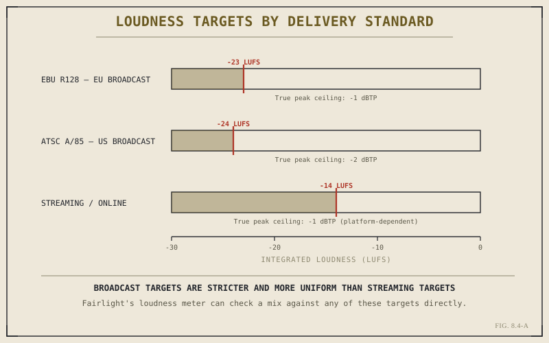

Chapter 8.3 built a signal path — tracks into busses, busses into a master — without ever asking how loud any of it should actually be. That question turns out to have a surprisingly precise answer, one governed by published broadcast and streaming standards rather than by ear alone. This chapter covers what those standards measure, why the number they care about isn't the one Chapter 8.1's meters were showing you, and what a mix has to hit before it's genuinely ready to deliver.
Peak Level Was Never the Right Measurement
The simplest way to measure a signal's level is peak — the single highest point a waveform reaches. It's also, on its own, a poor proxy for how loud a mix actually feels to a listener. Two mixes can share an identical peak level and sound dramatically different in perceived loudness, because peak says nothing about how sustained or how frequent those loud moments are across the whole piece. A single sharp effect can spike a meter exactly as high as a mix that's aggressively loud throughout, and treating those two cases as equivalent is precisely the kind of mistake broadcast standards were written to prevent.
LUFS: Measuring Loudness the Way Ears Actually Perceive It
LUFS — Loudness Units Full Scale — is the measurement built to solve that problem. Rather than capturing a single instantaneous peak, LUFS measures loudness integrated over time and weighted to roughly match human hearing's sensitivity across frequencies, producing a single number that correlates far more closely with how loud a mix actually feels than any peak reading does. Fairlight's loudness meter displays this figure directly, alongside the older peak reading Chapter 8.1 already introduced, and it's the LUFS figure — not the peak figure — that every modern delivery standard is actually written against.

Broadcast standards converge near a common target; streaming runs louder and varies more by platform.
Peak tells you the loudest single instant in a mix. LUFS tells you how loud the mix actually is. Every broadcast and streaming standard in use today is written against the second number, not the first.
Broadcast Versus Streaming: Two Different Targets
Traditional broadcast standards converge on a fairly tight target: the EBU's R128 specification calls for European broadcast delivery around -23 LUFS, while the American ATSC A/85 standard sits close by at -24 LUFS, both paired with a strict true peak ceiling to prevent transient spikes from causing distortion downstream. Streaming and online platforms generally target something noticeably louder — commonly around -14 LUFS — reflecting both looser regulation and a genuine difference in listening context: broadcast standards were built partly to keep loudness consistent as viewers switch between channels and advertisements, a concern that applies differently to an on-demand platform where a viewer chose the content directly.
Why This Isn't Optional Once Delivery Is the Goal
It's tempting to treat loudness compliance as a technicality that can be fixed at the very end, and for small, self-contained adjustments that's often true. It stops being true once a mix is meaningfully over or under its target, because most delivery pipelines — a broadcaster's ingest system, a streaming platform's automated check — will either reject a non-compliant mix outright or, worse, apply their own automatic loudness correction to it, which routinely produces a worse result than getting the level right during the mix itself. Building toward a known target from early in the mixing process, rather than discovering the number at the last possible moment, is the practical habit worth taking from this chapter.
Reading the Meter as You Work
Fairlight's loudness meter can be set to track a mix against any of these standards directly, showing not just an instantaneous reading but a running integrated measurement across however much of the timeline has played. Checking that measurement periodically during a mix — not only once at the very end — is what actually keeps a project on target, the same way Chapter 5.7 argued that real fluency comes from sustained habit rather than a single corrective pass. A mix that drifts loud during an action sequence and quiet during a dialogue scene can still average out to a compliant number and fail the spirit of the standard entirely, which is exactly the kind of problem only continuous monitoring catches.
With loudness targets established, the mix has both structure and a defined destination. What it doesn't yet have is clean source material to build that mix from — a gap Chapter 8.5 addresses directly, working through noise reduction and EQ as the first real cleanup pass most dialogue tracks need before they're mix-ready.
Key Concepts to Remember
- Peak level, a single highest point, is a poor proxy for perceived loudness — it says nothing about duration or frequency.
- LUFS measures loudness integrated over time, weighted toward human hearing — the figure every modern delivery standard is written against.
- Broadcast standards target roughly -23 to -24 LUFS; streaming platforms generally run louder, near -14 LUFS.
- Checking loudness continuously during a mix catches drift that an average reading taken only at the end can miss entirely.
Cross-References Forward
| → Ch. 8.5 | Cleaning Dialogue: Noise Reduction and EQ — preparing source audio so it can actually reach these loudness targets cleanly. |
| → Ch. 8.1 | Revisit the Edit page's basic meters, the peak reading this chapter's LUFS measurement supersedes for delivery purposes. |
| → Ch. 5.7 | Revisit why sustained habit, not a single corrective pass, is what actually builds and maintains a skill. |